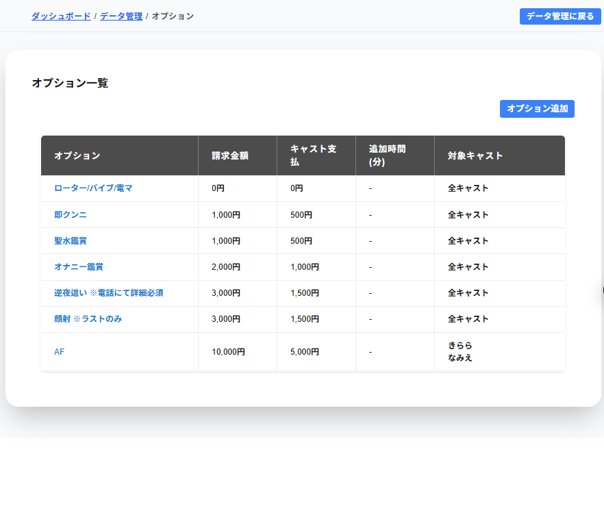

オプション一覧には登録したオプションが表示されています。
請求金額列には登録した請求金額が表示されます。
キャスト支払列には登録したキャスト支払が表示されます。
追加時間(分)列には登録した追加時間(分)が表示されます。
対象キャスト列には適用を登録したキャストが表示されます。
※対象キャストが0名の場合は対象キャストがいませんと表示されます。
※対象キャストが2名以下の場合は対象のキャスト名が表示されます。
※対象キャストが3名以上の場合は対象のキャストの人数で表示されます。
全キャストが対象の場合は全キャストと表示されます。
